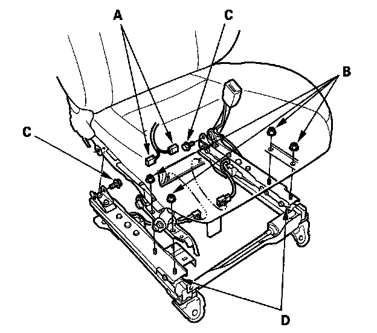
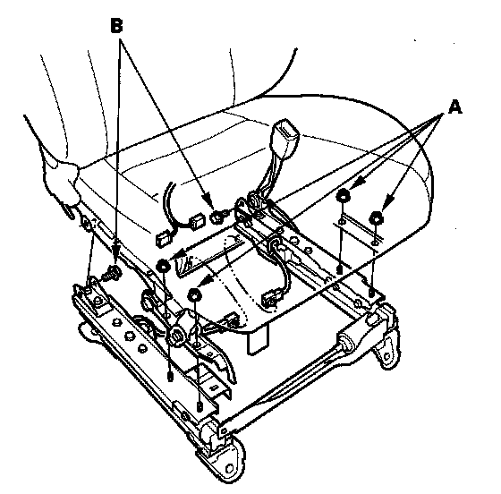

Front Passenger's Weight Sensor
Front Passenger's Weight Sensor ReplacementRemoval
NOTE: Removal of the front passenger's weight sensors must be performed according to the SRS precautions/ procedures.
1. Disconnect the negative cable from the battery, and wait at least 3 minutes before beginning work.
2. Remove the front passenger's seat assembly.
3. Remove the front cover, recline cover, and center cover.

4. Disconnect the sensor connector's (A) from the ODS unit harness, then remove the mounting nuts (B) and mounting bolts (C) from weight sensors (D).
5. Disconnect the sensor connectors (D) from the ODS unit harness, then remove the front passenger's weight sensors.
Installation
NOTE: Be sure to install the harness wires so they are not pinched or interfere with other parts.

1. Install the new front passenger's weight sensors with mounting nuts (A) and new mounting bolts (B) under the seat cushion.
2. Reinstall the front passenger's seat.
3. Reconnect the negative cable to the battery.
4. Calibrate the ODS unit.
5. After installing the front passenger's weight sensors, confirm proper system operation: Turn the ignition switch ON (II); the SRS indicator should come ON for about 6 seconds and then go off.